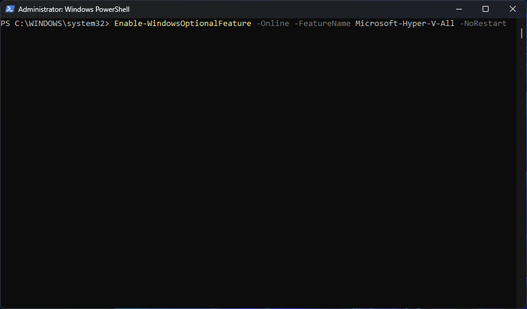

1
Kick off the feature install
From an elevated PowerShell session: Enable-WindowsOptionalFeature -Online -FeatureName Microsoft-Hyper-V-All -NoRestart. The -NoRestart flag lets the reboot happen on my terms rather than immediately.